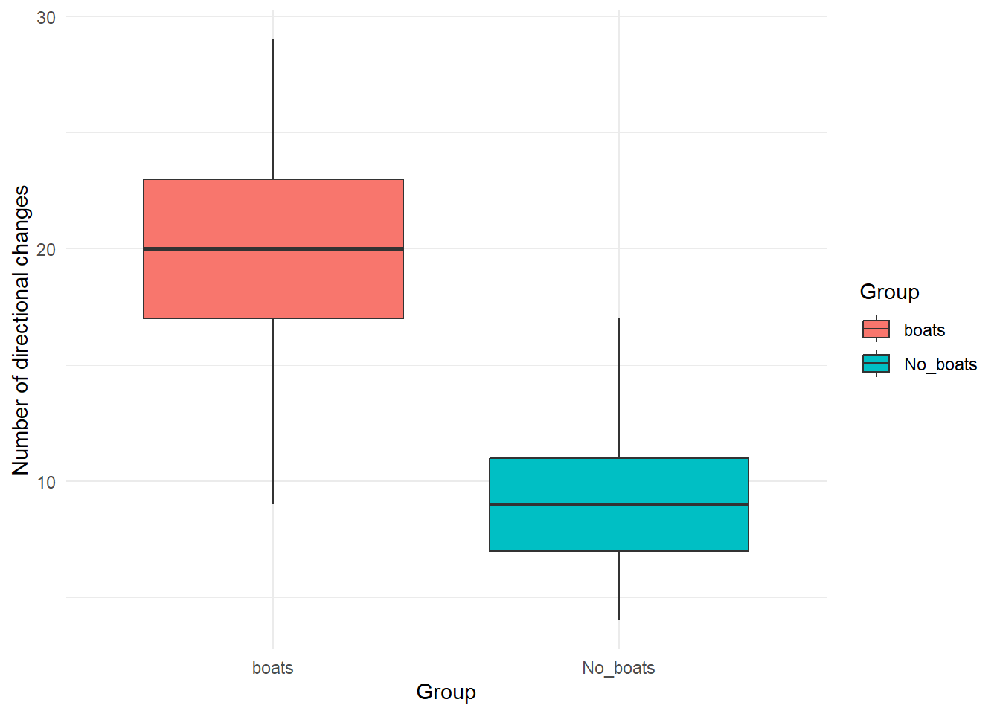

# Specify parameters
n_no_boats <- 50 # Sample size for the group without boats (number of dolphins)
mean_no_boats <- 9 # Mean of occurrences of directional changes in the group without boats
var_no_boats <- 10 # variance for the group without boats
n_boats <- 50 # Sample size for the group with boats
mean_boats <- 20 # Mean of occurrences of directional changes in the group with boats
var_boats <- 15 # variance for the group with boats
# Generate random data
No_boats <- round(rnorm(n_no_boats, mean = mean_no_boats, sd = sqrt(var_no_boats)),0)
boats <- round(rnorm(n_boats, mean = mean_boats, sd = sqrt(var_boats)),0)
# Combine data into a data frame
data <- data.frame(
Directional_changes = c(No_boats, boats),
Group = rep(c("No_boats", "boats"), each = n_no_boats)
)
head(data)## Directional_changes Group
## 1 5 No_boats
## 2 14 No_boats
## 3 5 No_boats
## 4 9 No_boats
## 5 16 No_boats
## 6 12 No_boatsstr(data)## 'data.frame': 100 obs. of 2 variables:
## $ Directional_changes: num 5 14 5 9 16 12 8 6 11 9 ...
## $ Group : chr "No_boats" "No_boats" "No_boats" "No_boats" ...library(ggplot2)
#ANOVA analysis
anova_result <- aov(Directional_changes ~ Group, data = data)
summary(anova_result)## Df Sum Sq Mean Sq F value Pr(>F)
## Group 1 2927 2926.8 207.7 <2e-16 ***
## Residuals 98 1381 14.1
## ---
## Signif. codes: 0 '***' 0.001 '**' 0.01 '*' 0.05 '.' 0.1 ' ' 1# Generate a boxplot to visualize the data
library(ggplot2)
ggplot(data, aes(x = Group, y = Directional_changes, fill = Group)) +
geom_boxplot() +
theme_minimal() +
labs(
x = "Group",
y = "Number of directional changes"
)  ##### Using a for loops to adjust the parameters and explore how they might impact the results/analysis.How small can your sample size be before you detect a significant pattern (p < 0.05)? How small can the differences between the groups be (the “effect size”) for you to still detect a significant pattern?
library(dplyr)##
## Adjuntando el paquete: 'dplyr'## The following objects are masked from 'package:stats':
##
## filter, lag## The following objects are masked from 'package:base':
##
## intersect, setdiff, setequal, union#variables to explore
effect_sizes <- seq(1, 10, 0.5) # Varying effect sizes
sample_sizes <- seq(5, 50, 5) # Varying sample sizes
alpha <- 0.05
# data frame to store the results
sample_size_results <- data.frame()
# creating the loop
for (effect in effect_sizes) {
for (n in sample_sizes) {
group_boats <- rnorm(n, mean = mean_boats, sd = sqrt(var_boats))
group_no_boats <- rnorm(n, mean = mean_no_boats + effect, sd = sqrt(var_no_boats))
t_test <- t.test(group_boats, group_no_boats)
p_value <- t_test$p.value
# storing the results
sample_size_results <- rbind(sample_size_results,
data.frame(Effect_Size = effect,
Sample_Size = n,
P_Value = p_value,
Significant = (p_value < alpha)))
}
}
# View the first few rows of results
print(head(sample_size_results))## Effect_Size Sample_Size P_Value Significant
## 1 1 5 5.119420e-03 TRUE
## 2 1 10 2.046770e-04 TRUE
## 3 1 15 1.670127e-07 TRUE
## 4 1 20 3.299073e-10 TRUE
## 5 1 25 4.654102e-12 TRUE
## 6 1 30 1.809820e-16 TRUE# filtering the data frame for significant results with small sample sizes
sample_size_results %>% filter(Significant == TRUE & Sample_Size <= 5)## Effect_Size Sample_Size P_Value Significant
## 1 1.0 5 0.0051194196 TRUE
## 2 1.5 5 0.0342455382 TRUE
## 3 2.0 5 0.0001913736 TRUE
## 4 2.5 5 0.0234802309 TRUE
## 5 4.0 5 0.0023766565 TRUE
## 6 5.0 5 0.0158632797 TRUE
## 7 5.5 5 0.0062711853 TRUE
## 8 6.0 5 0.0054363660 TRUE